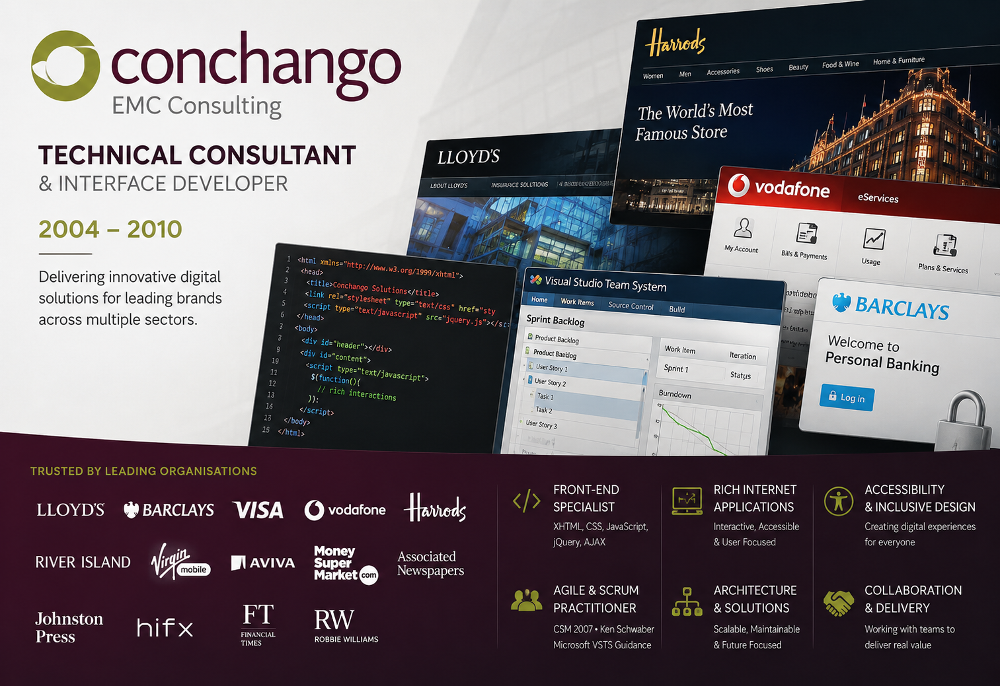

Conchango/EMC Consulting
Senior Technical Consultant & Interface Developer (2004–2010)
My time at Conchango, later acquired by EMC Consulting, was one of the most significant and influential periods of my professional career. Over almost six years, I worked as a Senior Technical Consultant and Interface Developer, delivering digital solutions for many of the UK's leading organisations across financial services, retail, telecommunications, media and entertainment.

When I joined the company in 2004, I was one of only two permanent front-end specialists within the consultancy. This position provided the opportunity to work on a wide range of projects, from large public-facing websites and e-commerce platforms to intranet applications, content management systems and technology proof-of-concepts. It was also during this period that I was first introduced to Agile and Scrum, methodologies that would later become central to my career.
Industry Recognition
In 2006, independent analyst firm Forrester Research named Conchango the leading web design agency in Europe in its evaluation of the European digital agency market. The report highlighted the consultancy's strengths in user experience, user-centred design, Agile delivery practices, client collaboration and brand-led digital experiences.
Conchango employed approximately 200 specialists across its design practice and worked with many of the UK's leading brands and organisations. Working within this environment provided exposure to large-scale digital programmes, innovative technologies and industry-leading approaches to user experience and Agile delivery. These experiences would shape the direction of my career for years to come.
Project Focus
Describe the objectives and scope of the assignment without claiming ownership of the original business case.
Career Development
I initially joined Conchango as a specialist interface developer, responsible for creating page layouts, styling and client-side functionality. As the consultancy grew, so did my responsibilities.
Over time, my role expanded to include technical consultancy, stakeholder engagement, user experience considerations, development leadership and mentoring. Working alongside project managers, architects, designers and business stakeholders helped me develop a broader understanding of how technology, business objectives and user needs combine to create successful digital products.
This period marked my transition from specialist front-end developer to senior consultant and laid the foundations for later roles as UX Architect, Scrum Master, Agile Coach and Digital Delivery Consultant.
Key Client Engagements
During my time with Conchango and EMC Consulting, I worked on projects for many well-known organisations across multiple sectors, including:
- Lloyd's of London
- Barclays
- Visa
- Vodafone
- Harrods
- River Island
- Virgin Mobile
- HiFX
- Aviva
- MoneySuperMarket
- Associated Newspapers
- Johnston Press
- Microsoft
- Financial Times
- Robbie Williams
Among the most significant engagements were:
Lloyd's of London — Lead UI Developer on the relaunch of the organisation's corporate website. This project also marked my first exposure to Agile and Scrum methodologies.
Harrods — Led a team of front-end developers responsible for delivering four user interfaces on a shared commerce platform, including the public e-commerce website, call centre application, wedding list application and content management system. The work contributed to Conchango's Digital Commerce Platform (DCP), a reusable e-commerce framework built on Microsoft technologies.
Vodafone — Worked within a specialist team producing prototypes and practical examples supporting Vodafone's new European eServices style guide, helping establish standards that would be rolled out across multiple markets.
Visa — Contributed to the creation of a proof-of-concept for a next-generation secure payment gateway, exploring new approaches to customer payment selection and interaction design.
Agile & Scrum Journey
One of the most important outcomes of my time at Conchango was my introduction to Agile delivery and Scrum.
Beginning with the Lloyd's project in 2004, I experienced first-hand the benefits of iterative development, close stakeholder collaboration and adaptive planning. These principles resonated strongly with me and led to a long-term commitment to Agile ways of working.
I was later involved in Microsoft's Visual Studio Team System (VSTS) Scrum Process Guidance project, working in conjunction with Scrum co-creator Ken Schwaber. This project was a significant milestone because it connected my practical experience of Agile delivery with Microsoft's Application Lifecycle Management tools.
My formal Scrum training came afterwards, when I became a Certified Scrum Master through training delivered by Mike Cohn of Mountain Goat Software. This helped consolidate the Agile experience I had gained on earlier projects and provided the foundation for later Scrum Master and Agile Coach roles.
The foundations established during this period ultimately led to later engagements as Scrum Master and Agile Coach for organisations including HH Global, Mtivity, Thales and H&M.
Microsoft Innovation Projects
As a major Microsoft partner, Conchango frequently collaborated with Microsoft to demonstrate emerging technologies and development practices.
One particularly interesting initiative involved the creation of demonstration applications showcasing the capabilities of Windows Presentation Foundation (WPF), Microsoft's next-generation user interface framework. Using existing Conchango client projects based on the Financial Times and Robbie Williams websites, we produced highly interactive demonstrations illustrating the possibilities of rich desktop and web experiences.
These demonstrations attracted significant interest within Microsoft and were ultimately presented to Steve Ballmer, then Chief Executive Officer of Microsoft, as examples of the potential of the new technology platform.
Technical Leadership
Throughout my time at Conchango and EMC Consulting, I became recognised as a specialist in front-end architecture and client-side development.
Key areas of expertise included:
- Front-end architecture and development
- User experience and interface design
- Accessibility and inclusive design
- Rich Internet Applications (RIA)
- E-commerce platforms
- Content management systems
- JavaScript frameworks and client-side development
- Cross-browser compatibility
- Agile delivery and team collaboration
The technologies used throughout this period included XHTML, HTML, CSS, JavaScript, jQuery, AJAX, XML, XSLT, ASP.NET, Microsoft Commerce Server, Sitecore and numerous enterprise platforms.
Impact on My Career
My six years at Conchango and EMC Consulting provided the foundation for much of my subsequent career. The breadth of clients, technologies and business sectors exposed me to a wide variety of challenges and helped me develop a balanced combination of technical expertise, consultancy skills and delivery experience.
More importantly, this was where I first encountered Agile delivery, user-centred design at scale and enterprise-level digital transformation. The lessons learned during this period continued to influence my work long after I left the consultancy.
Many of the skills, approaches and professional relationships developed during these years continue to shape my work today, making Conchango and EMC Consulting one of the defining chapters of my professional journey.
X
facebook
linkedin
Instagram
mail